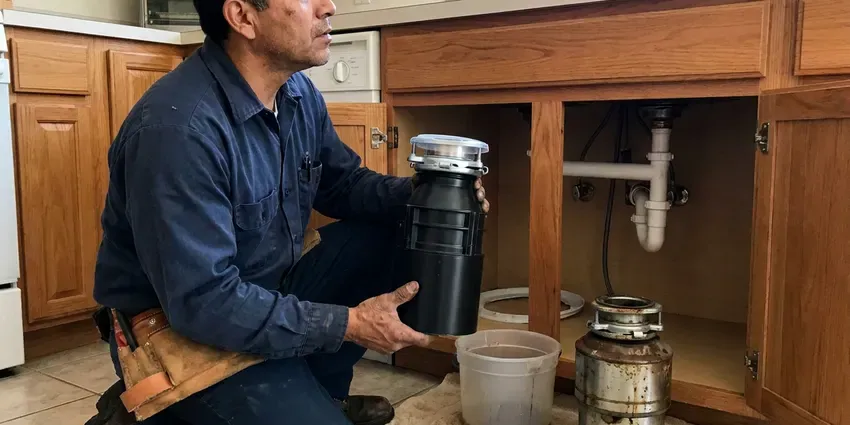

Grease Trap Installation in Nashville, TN
Opening soon or just failed an inspection? We size, set and test grease traps in Nashville, TN.
- Overnight Installs Available
- Free Estimates
- Same-Week Site Visits
- Full-Sink Drain Test
Get a Grease Trap That Passes in Nashville, TN
Most indoor traps are set in a day.
Grease Trap Installation in Nashville, TN
Three inspectors care about your grease trap. The plumbing inspector checks the install, the sewer authority checks the size, and the health inspector checks that it can be cleaned. We plan for every one of them up front.
Some of what we do:
- Automatic grease removal units
- Traffic-rated lids for drive lanes
- Slab cutting and concrete patching

Additional Kitchen Plumbing Services in Nashville, TN
Our kitchen plumbing services in Nashville, TN cover sinks, disposals, dishwashers, and grease traps so your kitchen keeps running without backups or leaks.




Garbage Disposal Replacement in Nashville


Customers
Why Choose BGV Plumbing for Grease Trap Installation in Nashville, TN?
Downtime is the real cost of this job. We schedule indoor work for closed days or overnight so you do not lose a service. For outdoor interceptors we phase the dig and tie-in so your kitchen keeps draining to the old trap or a temporary unit until the new one is ready to take flow.
- Certified Units, We install traps listed under PDI G-101 or the matching ASME standard.
- Licensed Plumbers, Licensed commercial plumbers do the work, not laborers with a van.
- Permit Handled, The permit and sizing calculation go in under our license and book the inspections.
Citywide Coverage
Distance from our shop rarely changes the schedule. Outlying jobs are booked on the same timeline as in-town ones. For buried interceptors, we line up nearby tank delivery and excavation equipment so travel does not add days to the job.
Experienced Team
Every tech on our grease trap crew carries a laser level and a sewer camera, because a trap set out of level or tied into a broken line will fail early. Both get checked before the lid goes on. Mistakes get caught on site. A second set of eyes checks every sizing calculation.
Safety-First Approach
Open trenches and lifted lids get barricaded before we walk away, even for a lunch break. People walking to a car or a back door are not looking down. Trenches in a drive lane get steel plates, and lids go back on every night. Nothing stays open overnight.
Trusted Certified Nashville Plumbing Services Professionals
At BGV Plumbing, we take pride in licensed, certified plumbing services throughout Nashville, TN. Credentials matter in this trade. Our plumbers hold recognized industry credentials, and they follow strict safety and quality rules on every repair, installation and maintenance call we run.
Call Us Now PHCC Plumbing Contractor Recognition
PHCC Plumbing Contractor Recognition Better Business Bureau (BBB) Accreditation
Better Business Bureau (BBB) Accreditation Angi Certified Pro
Angi Certified Pro ISO 9001 Quality Management Certification
ISO 9001 Quality Management CertificationGrease Traps and Interceptors Set in Nashville, TN
Under-Sink Grease Trap Setup in Nashville, TN
Small cafes and coffee bars often get by with a 10 to 25 GPM hydromechanical trap tucked under the prep sink or beside it. It sits on the floor or in a recess, with the flow control fitting on the inlet side. Clearance matters most. We leave room to pull the lid and baffle without unhooking the sink, because a trap nobody can open is a trap nobody cleans.

Residential Grease Interceptor Setup in Nashville, TN
Homes rarely need a grease trap, though some do. Licensed home bakeries and houses on old clay laterals that keep clogging are the usual cases. A small 4 to 7 GPM unit under the kitchen sink catches most of it, and cleaning takes about ten minutes with a spatula and a bucket. Check with your local health office first.
Grease Trap Brands We Install in Nashville
Zurn, Watts, Schier and Endura cover most of what we set in commercial kitchens, plus precast concrete tanks for the big outdoor interceptors. Each brand has its own lid gasket and baffle layout. Parts availability matters. We lean toward units with parts a local supply house keeps on the shelf, so a cracked lid does not close you for a week.
Restaurant Grease Trap Compliance in Nashville, TN
Most sewer authorities run a FOG program with an inspector who opens your trap and checks your pump-out manifests against the schedule they set. A failed inspection can bring a fine or an order to upgrade. We install to pass. We add a sampling port if they require it and size to the authority's own formula.
In-Ground Gravity Interceptor Installation in Nashville, TN
Buffets, grocery delis and kitchens doing several hundred covers a night usually end up with an in-ground gravity interceptor of 1,000 gallons or more. The work is excavation and a level gravel bed, then the tank and its inlet and outlet piping. Karst ground with sinkholes is common in parts of Tennessee, and shifting soil above that rock can break buried pipes over time. What comes out of the hole decides our shoring and backfill. Risers bring the lids to grade.
Grease Trap Installation for Schools and Institutions in Nashville
School cafeterias and hospital kitchens cook in big batches and wash in big batches, which means large pot sinks and a dish machine running hard for two hours after each meal. Most end up with an outdoor gravity interceptor. We schedule around the calendar. For schools that often means digging over a break, and for hospitals it means phasing the tie-in so the kitchen never fully shuts down.
Food Truck Commissary and Ghost Kitchen Traps in Nashville, TN
Commissary kitchens see a dozen trucks dumping wash water in the same two hours, which is a different load from a restaurant spreading it over a long shift. Sizing has to cover that short, heavy spike. Ghost kitchens with four or five brands under one roof often share a single trap, so the fixture count can be higher than the floor plan suggests. Each brand's prep sink counts.

Replacement and Upgrade Services in Nashville, TN
Steel traps from decades back rust through at the baffle seams, and by then the outlet is usually passing grease straight to the sewer. We run a camera down the outlet first to see how much grease got past the old unit. Sometimes the line needs jetting too. Upgrading also gives you a chance to move from a 20 GPM trap to a 35 or 50 if the menu or seat count grew.
Grease Trap Installation Near Me in Nashville, TN
Our service area covers Nashville and the towns around it, out to roughly an hour's drive. Outlying towns get the same lead times as jobs in the city. Distance rarely changes price. We source tanks and equipment close to the job to keep freight down.
Having a plumber near Nashville who already knows your trap makes the next call faster. Our dispatch line is (615) 518-0893. We keep a record of every unit we install, with the model and the install date. Next time you need service, we already know what you have.
BGV Plumbing at a Glance
- Fully licensed plumbing team covering Nashville, TN
- Same-day appointments and 24/7 emergency response
- Upfront, flat-rate pricing before work begins
- 4.9-star rated by 932+ Tennessee customers
Nashville Map
Nashville Information
- Population
- 687,788
- Area codes
- 615/931/629
- Service area
- Nashville and communities within 40 miles
- Nearby
- Hendersonville, Franklin, Smyrna, Gallatin
A grease trap in a Nashville, TN kitchen has to match the peak flow of the sinks that drain to it, or grease goes straight to the sewer. Rapid swings between mild and freezing weather in Nashville can loosen joints and fittings over time as pipes expand and contract.
Talk to a Plumber
Call BGV Plumbing for honest, reliable plumbing from people who know the trade in Nashville, TN.
Our Specialized Plumbing Services in Nashville, TN
At BGV Plumbing, you get every kind of plumbing service from one company across Nashville, TN. We go from leak detection all the way to full system installations, for homes and commercial buildings, and we do it quickly at a fair price. Here are the core services we offer:


From Sizing to Inspection in Nashville, TN
Every grease trap install in Nashville follows the same three steps: size it, permit it, set and test it.
Call and Fixture List
Call BGV Plumbing at (615) 518-0893 and walk us through your sinks and dish machine. We set a site visit and give you a written estimate after it.
Size and Permit
We calculate flow from every fixture, pick the unit and file the permit in Nashville with the sizing attached.
Install and Test
We set the trap, pipe the flow control and vent, and drain a full sink through it before the inspector signs off.
Frequently Asked Questions About Grease Trap Installation in Nashville
Installed prices for small indoor hydromechanical traps typically fall between $1,500 and $5,000. Large outdoor gravity interceptors often run $8,000 to $30,000 or more once excavation and site restoration are counted. Brand is a small part of it. The written estimate holds unless the dig turns up a buried surprise.
It keeps cooking grease out of the public sewer. Hot greasy water cools as it moves through the trap, the grease floats to the top, and cleaner water leaves through the outlet. Grease that reaches the mains hardens into blockages, and the sewer authority bills the kitchens it traces back to. Your own drain lines benefit too.
Almost always, yes. Commercial grease traps fall under the plumbing permit, and many sewer authorities also want their own FOG approval on the size and model. Our office handles the permit paperwork and books the inspections. Expect an inspector on site.
As close to the grease-producing fixtures as the space allows, so grease does not cool and coat the pipe before it reaches the trap. Leave room to open the lid and clean it without moving equipment. Never under a cook line. Outdoor tanks should sit where the hauler can reach them and nothing gets parked on the lids.
In everyday talk the two names get swapped. Strictly, a grease trap is the small indoor unit rated in gallons per minute, and an interceptor is the large tank rated in gallons of capacity. Codes vary on the wording. Some plumbing codes call both of them interceptors and separate them as hydromechanical and gravity, so we use whatever terms your permit office uses.
We start with a fixture list and the drain rate of each fixture. Sinks are calculated by compartment volume and drain-down time, typically one or two minutes, and dish machines by the manufacturer's discharge rating. That gives the GPM figure. Hydromechanical traps are picked by that GPM rating, while gravity interceptors are sized by volume and retention time from the same data.
Indoor hydromechanical traps and outdoor gravity interceptors cover nearly every job we do. For fry-heavy kitchens we also set automatic units that skim grease on a timer. Most cafes go hydromechanical. High-volume kitchens usually get an outdoor gravity tank, especially if the sewer authority asks for one.
The common rule is to clean before grease and solids fill 25 percent of the trap's depth. Busy kitchens with small indoor traps often hit that mark every week. Outdoor tanks go longer. Many gravity interceptors are pumped every 30 to 90 days, and your local FOG program may set a maximum interval no matter what the trap looks like.
What People Are Saying About Our Plumbing Experts?

Carlos V.
Our house still had galvanized pipe, and upstairs the shower was a trickle. The crew repiped everything in PEX over three days and patched every drywall hole before they left. The pressure difference is night and day.
Repiping · Smyrna, TN
Greg S.
I manage a small strip center with six tenants. BGV Plumbing handles our annual backflow testing and fixed a recurring clog in the shared sewer line that had been backing into the nail salon. Their reports come in clean and on time.
Commercial Plumbing · Spring Hill, TN
Sofia M.
Two new toilets went in during one visit. The tech set them on new wax rings and swapped the old supply lines. He also noticed our bathroom faucet dripping and replaced the cartridge while he was there. No mess left behind.
Toilet Installation · Spring Hill, TN
Diane F.
My kitchen faucet had dripped for months and I finally got tired of hearing it at night. BGV Plumbing came out the next morning, replaced the cartridge and the O rings, and tightened a loose base that was letting water under the sink.
Faucet Repair · Franklin, TNJessica T.
We were adding a gas range in a kitchen remodel and needed a new line run from the meter. The plumber pulled the permit, ran the pipe through the crawl space, and had it inspected and approved within the week.
Gas Line Repair · Smyrna, TNLaura S.
Our 40 gallon tank started leaking from the bottom after thirteen years. The tech hauled the old one out, set a new unit with a fresh expansion tank, and had hot water running in about four hours. He took the old tank with him too.
Water Heater Replacement · Spring Hill, TN